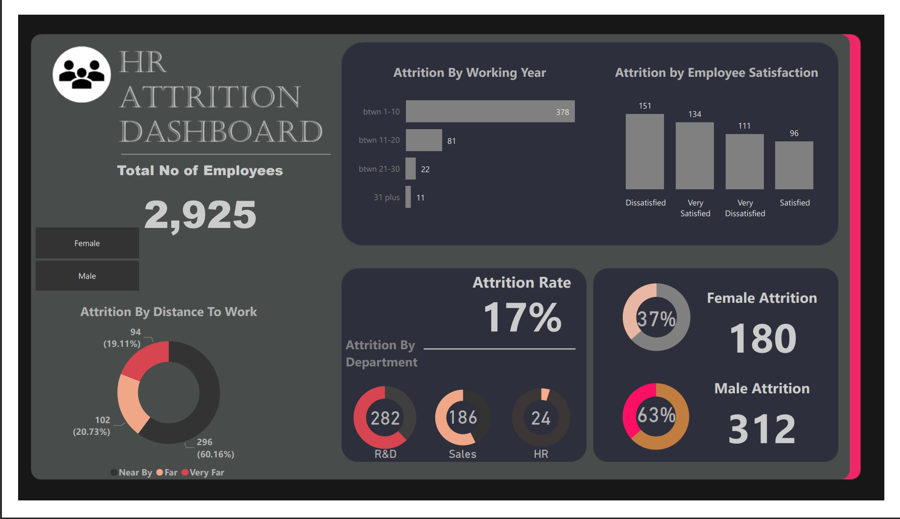
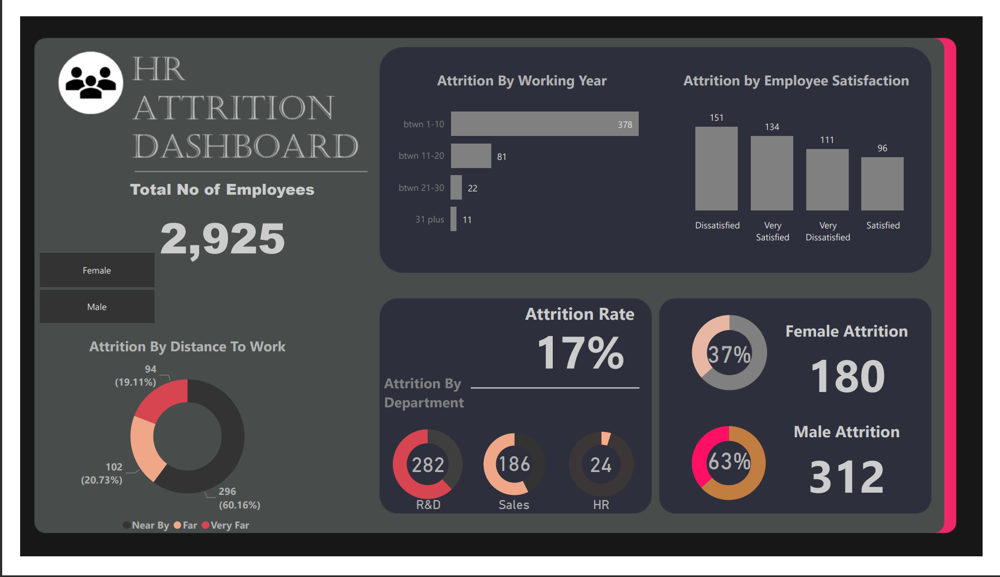
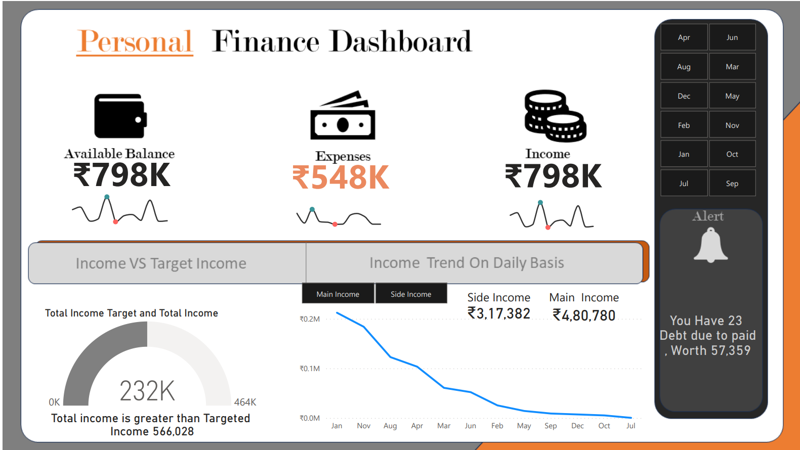
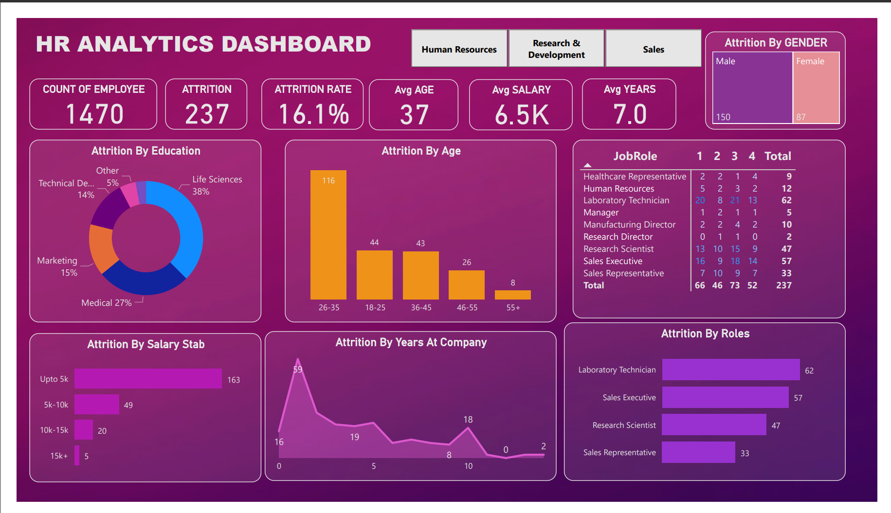

This Dashboard refers to information collected and analyzed within the hospitality industry, which includes businesses that offer accommodations, to customers. This data can come from sales reports, booking data, and other sources.
.
 

In this Project We have successfully developed an HR Analytics Dashboard
were we have done converting raw Data into useful Data Which empowers organizations to make data-driven decisions in the real time. With a focus on key attributes such as age, average salary, and average working experience.

The dashboard typically displays key financial information such as income, expenses, savings,and debt in a clear and visually appealing format. Users can customize the dashboard to suit their specific needs and preferences, selecting the financial metrics they want to monitor closely.

This tab provides a high-level summary of key statistics related to road accidents, such as the total number of accidents and types of vehicles involved. It also display charts or graphs to showcase trends over time.
In order to make informed business decisions. This involves collecting data from various HR systems and sources, such as recruitment, onboarding, employee engagement, performance management, compensation, and turnover.

It empowers organizations to make data-driven decisions in the realm of human resources. With a focus on key attributes such as age, average salary, and average working experience.
By visualizing and analyzing these critical metrics,
It shows the Sales analytics by using WallMart Data,In order to make informed business decisions. This involves collecting data from various sources based on country sales , Product categories, Product management,and turnover.